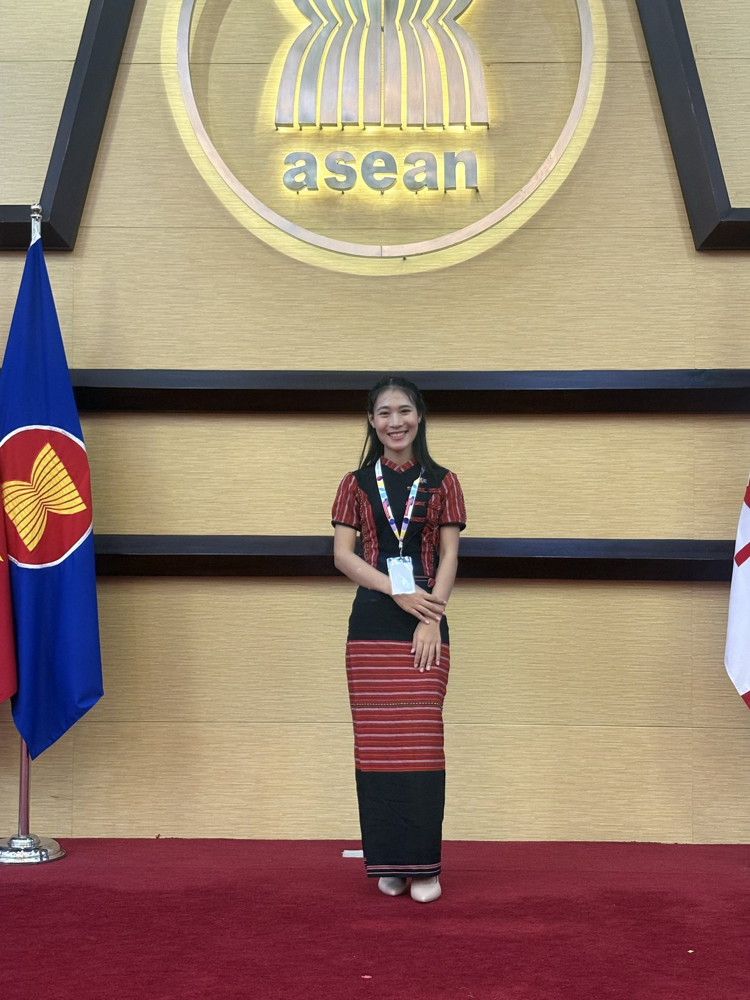
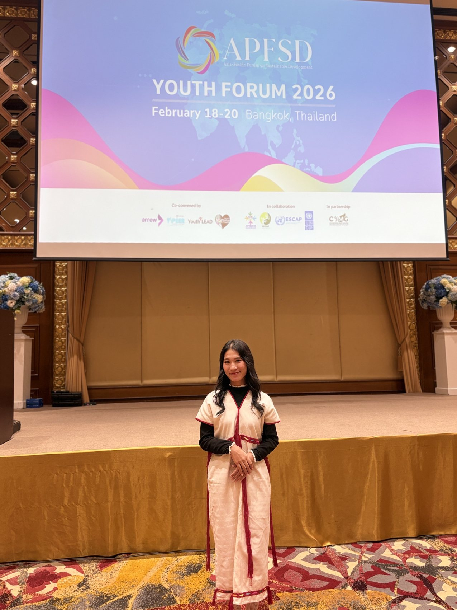

Karenni Refugee Camp → Rangsit University → APFSD 2026
I'm Naw Gay Gay — an educator, mentor, and youth-empowerment advocate working with refugee and displaced communities along the Thai–Myanmar border. I believe education is the tool that turns circumstance into choice.

What I show up for
Every program I build and every classroom I stand in comes back to the same belief — that access to education is the single most effective lever for a young person's future.
Teaching English, facilitating leadership sessions, and designing curricula that meet students from the Karenni community exactly where they are.
Mentoring refugee and displaced youth as they prepare for higher education, scholarships, and leadership roles they were rarely told were possible.
Bringing youth perspectives into regional conversations on sustainable development, equity, and access — from the classroom to international forums.
"Education should not only equip learners with academic knowledge but also foster critical thinking, ethical leadership, empathy, and the capacity to address complex social challenges."

Currently
In 2026 I was selected to present at the Asia Pacific Forum on Sustainable Development Youth Forum, sharing an abstract on Learning, Equality, and Hope — carrying youth perspectives from the Thai–Myanmar border into regional conversations on sustainable development.
Let's work together